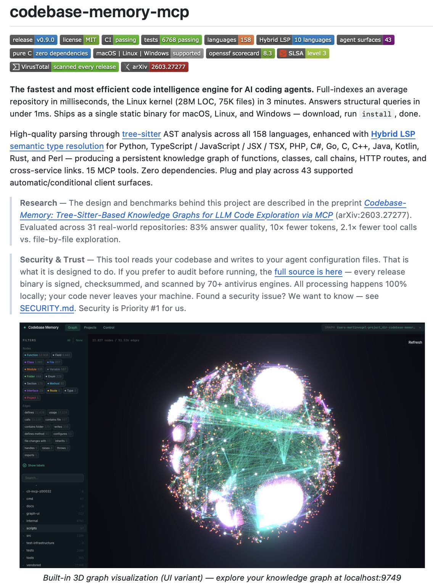

Filed 31 Jul 2026 · Published 31 Jul 2026
Codebase-memory-mcp: persistent repo graphs need provenance and freshness
Give your AI agent a persistent knowledge graph of your entire codebase!

Post summary
Sumanth P presents codebase-memory-mcp as a persistent codebase knowledge graph for AI coding agents. The post claims Tree-sitter-based language coverage, hybrid semantic resolution for selected languages, MCP tools for architecture and impact queries, watcher-driven re-indexing, a shareable SQLite graph artifact, and large speed/token improvements over file-by-file exploration.
Media summary
One public image was archived. It is a project README-style graphic showing feature badges, project-authored performance/security statements, and a dense 3D graph UI. It is promotional project material, not an independent demonstration.
Book relevance
- Candidate chapters: coding-agent context engineering; static analysis and codebase maps; agent memory and maintained context; evidence/provenance for automated reasoning.
- Candidate claim: Persistent repository context can make structural exploration cheaper and faster than repeated file-by-file discovery, but a graph is trustworthy agent context only when edge provenance, coverage, uncertainty, and freshness remain inspectable.
- Useful counterweight: A polished graph can make inferred architecture look parser-confirmed. Incremental updates must preserve or recompute cross-file relationships correctly; speed/token claims need reproducible benchmarks on representative repositories.
- Evidence strength: Moderate for a public implementation with documented parser-based indexing, incremental updates, watcher behavior, and local-processing claims; discovery-only for performance, language/client coverage, graph correctness, security, and coding-agent outcome claims.
Hermione relevance
This is highly relevant to Hermione's repository work. A maintained graph could help route research and code inspection, but it must never replace direct evidence. Hermione should treat parser-confirmed references as leads; use source reads and tests before edits; require visible edge type/source span/freshness and explicit handling of inference or ambiguity; and evaluate any adoption in an isolated representative repository before allowing automatic agent configuration or background watchers.
Primary-source quick pass
The visible GitHub URL in the author comment was inspected independently by ordinary public GitHub API/raw-source fetches, not by clicking through LinkedIn. At commit d6be58ef9d43c574a2d1b0827ecc1e3c4846f0fe, the repository documents an MIT-licensed C project that indexes code into a SQLite-backed graph with Tree-sitter extraction, stated hybrid semantic resolution, MCP/query tools, an incremental re-indexer, and a watcher. Source comments in the inspected incremental path explicitly address retention and recomputation of cross-file edges after changed-file purges. At observation time GitHub listed 36,841 stars and 2,893 forks; these volatile metrics do not establish correctness.
Limitations
- LinkedIn is social/discovery evidence. Its speed, token, scale, language, integration, and outcome claims were not independently reproduced.
- Six guest-visible top-level comments were archived while seven were reported; the authenticated target view also showed a visible reply and indicated partial comment coverage. No comments, replies, or
…morecontent were expanded. - The discussion itself raised unresolved operational questions about sub-millisecond behavior at graph scale, incremental re-parsing, and whether conventional grep-style exploration may remain sufficient.
- The authenticated capture confirmed target-post content with no login wall or CAPTCHA/security checkpoint. It also contained unrelated navigation, sidebar, and messaging-overlay UI; raw authenticated text, JSON, and screenshot remain local-only and are excluded from committed/public material.
- No LinkedIn controls or external links were clicked. No repository installer, release asset, binary, MCP server, watcher, UI, or benchmark was run.